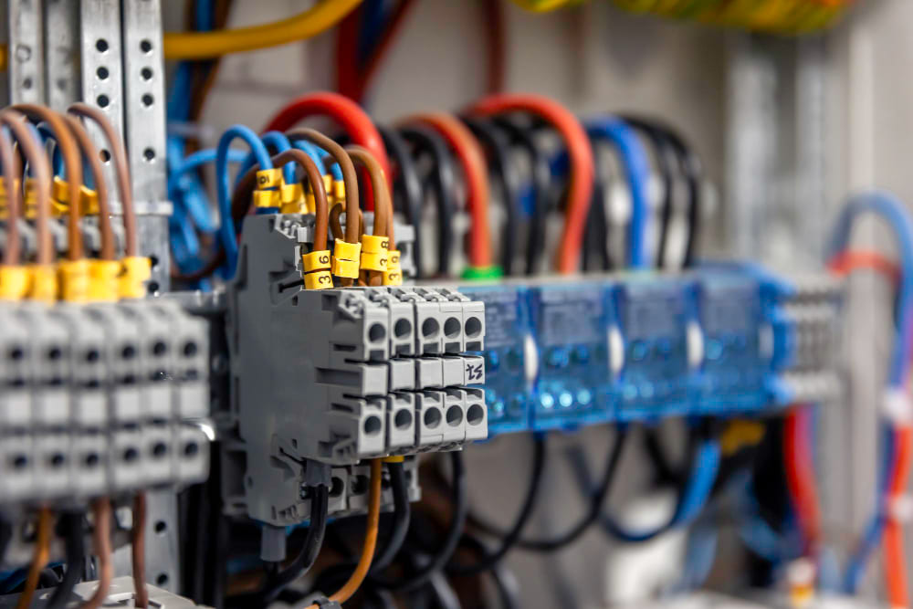

Programación de PLC
Ingeniería de Controladores
Solicitar Servicio PLC
Ingeniería de Controladores
Lógicos Programables
Desarrollamos y adaptamos programas de control en los principales lenguajes de PLC, incluyendo LAD/KOP, STL/AWL, FBD/FUP, GRAPH, y SCL. Nuestros ingenieros están certificados en las plataformas líderes de la industria, asegurando que su maquinaria opere con la máxima eficiencia, seguridad y confiabilidad.
Plataformas Compatibles
SIMATIC S7
TIA Portal (Siemens)
ControlLogix
Allen Bradley
Mitsubishi Electric
DirectLOGIC (Koyo)
